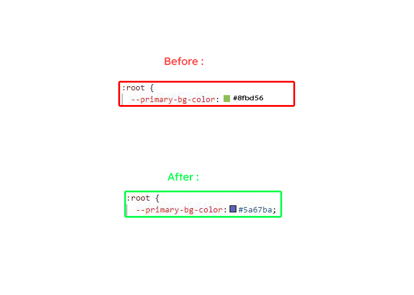
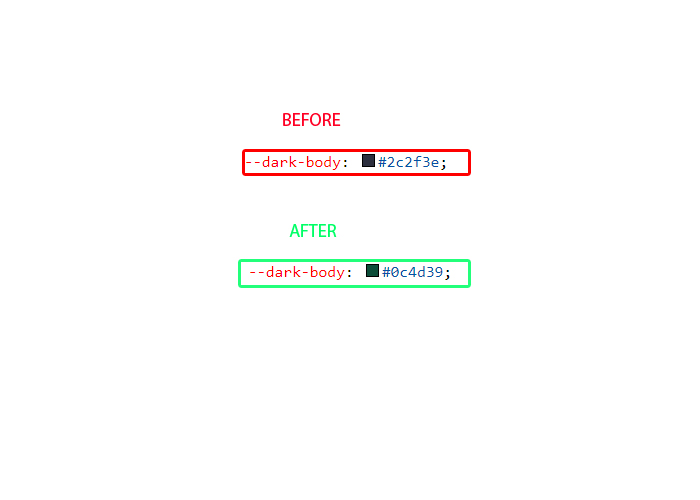
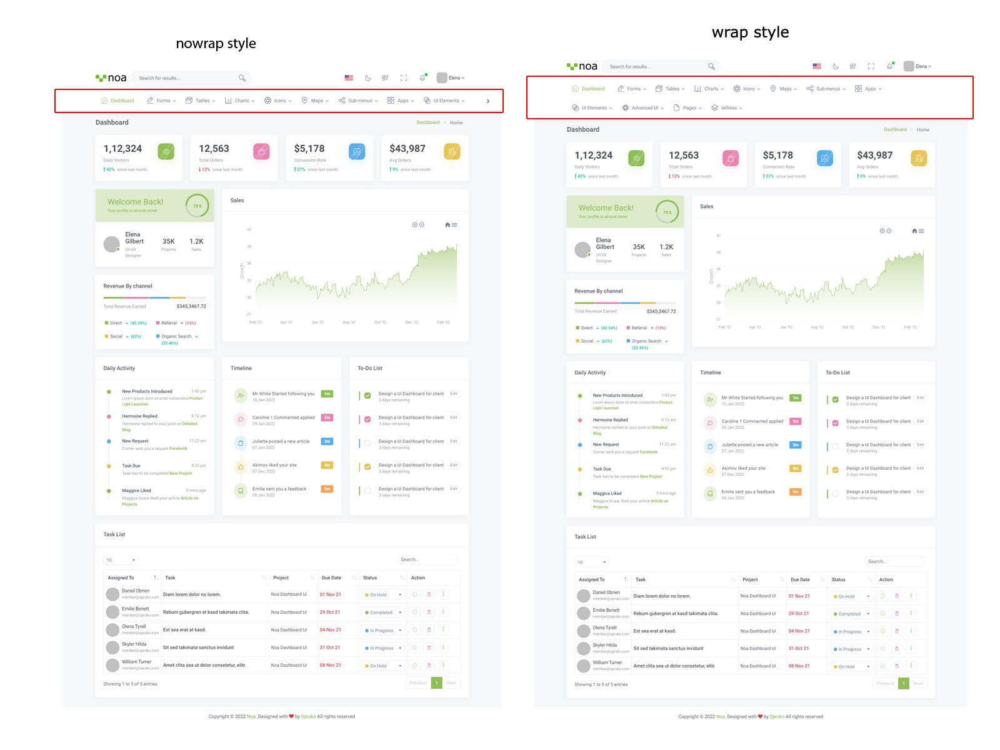

FAQ'S
1) How to Change Font Style ?
Step 1:
Go To _fonts.scss (assets/scss/custom/fonts/_fonts.scss )
if you want to change another font-family Go to the site Google Fonts And Slect One font Family and import In to style.css file
How to Select font Family
Example:

Step 2:
And paste Your Selected font-family in _fonts.scss
Example:
@import url("https://fonts.googleapis.com/css?family=Roboto:300,400,500,700,900");Step 3:
And add the Your Selected font-family in _bootstrap-styles.scss(assets/scss/bootstrap/_bootstrap-styles.scss)
Example:
body {
margin: 0;
font-family: "Roboto", sans-serif;
font-size: 0.8375rem;
font-weight: 400;
line-height: 1.5;
color: $default-color;
text-align: left;
background-color: $background;
}
2) How to Change Sidemenu and Header icon?
NOTE :Sidemenu & Header Icons used in Noa are fromhttps://iconscout.com/unicons (Thin Line Icons).
Changing Sidemenu Icon :
You can change sidemenu icon by replacing svg code of selected icon with svg code of required icon and add class="side-menu__icon" for that svg icon
Changing Header Icon :
You can change Header icon by simply replacing svg code of selected icon with svg code of required icon.
3) How to Change Primary Color ?
Step 1:
Go To _bootstrap-styles.scss (assets/scss/bootstrap/_bootstrap-styles.scss )
You will find --primary-bg-color: #8FBD56; , where you can simply change color code to change primary color
How to Change Primary Color
Example:

Simply you can also change color for primary-bg-hover:#5cd3b9; & --primary-bg-border:#38cab3; , where you can simply change color code to change them
4) How to Change Logo ?
Go To "assets/images/brand" folder and replace your logo with Previous Logos within in image size. note: Please don't increase logo sizes. Replace your logo within given image size. otherwise the logo will not fit in particular place it disturbs the template design.
5) How to Enable RTL version?
Changing to RTL version
open custom.js path:(HTML/Noa/assets/js/custom.js) file go to RTL Style. and remove comments for $('body').addClass('rtl'); to enable RTL version as shown in below
// $('body').addClass('rtl');
$('body').addClass('rtl') as shown below
$('body').addClass('rtl');
6) How to Enable Darktheme?
open custom.js path:(HTML/Noa/assets/js/custom.js) file go to Dark Theme Style and remove comments for $('body').addClass('dark-mode'); to enable dark-mode style as shown in below
// DARK THEME START
// $('body').addClass('dark-mode');
// DARK THEME END
dark-mode as shown below
// DARK THEME START
$('body').addClass('dark-mode');
// DARK THEME END
7) How to change Dark Background color?
Step 1:
Go To _bootstrap-styles.scss (assets/scss/bootstrap/_bootstrap-styles.scss )
You will find --dark-body: #2c2f3e; , where you can simply change color code to change dark background color
How to change Dark Background Color
Example:

8) How to Enable Background image?
open custom.js path:(HTML/Noa/assets/js/custom.js) file go to Background Image Styles and remove comments for bg-img1 & dark-mode to enablebackground image style as shown in below
// Bg-Image1 Style Start
// $('body').addClass('bg-img1');
// $('body').addClass('dark-mode');
// ! Bg-Image1 Style End
bg-img1 & transparent-theme as shown below
// Bg-Image1 Style Start
$('body').addClass('bg-img1');
$('body').addClass('dark-mode');
// ! Bg-Image1 Style End
NOTE:Similarly you can apply bg-img2,bg-img3,bg-img4
NOTE:We can't use menu styles and header styles in Background Image
Go To "assets/img/media" folder and replace your image with Previous image(bg-img1) within image size. note: Please don't increase image size. Replace your image within given image size. otherwise the image will not fit in particular place it disturbs the template design.
9) How to Enable Color-header?
open custom.js path:(HTML/Noa/assets/js/custom.js) file go to Header Styles. and remove comments for color-header to enable color-header style as shown in below
// COLOR HEADER START
// $('body').addClass('color-header');
// COLOR HEADER END
color-header as shown below
// COLOR HEADER START
$('body').addClass('color-header');
// COLOR HEADER END
10) How to Enable Dark-header?
open custom.js path:(HTML/Noa/assets/js/custom.js) file go to Header Styles. and remove comments for dark-header to enable dark-header style as shown in below
// DARK HEADER START
// $('body').addClass('dark-header');
// DARK HEADER END
dark-header as shown below
// DARK HEADER START
$('body').addClass('dark-header');
// DARK HEADER END
11) How to Enable Light-header?
open custom.js path:(HTML/Noa/assets/js/custom.js) file go to Header Styles. and remove comments for header-light to enable light-header style as shown in below
// LIGHT HEADER START
// $('body').addClass('header-light');
// LIGHT HEADER END
light-header as shown below
// LIGHT HEADER START
$('body').addClass('header-light');
// LIGHT HEADER END
12) How to Enable Gradient-header?
open custom.js path:(HTML/Noa/assets/js/custom.js) file go to Header Styles. and remove comments for gradient-header to enable gradient-header style as shown in below
// GRADIENT HEADER START
// $('body').addClass('gradient-header');
// GRADIENT HEADER END
gradient-header as shown below
// GRADIENT HEADER START
$('body').addClass('gradient-header');
// GRADIENT HEADER END
13) How to Enable Light Menu?
open custom.js path:(HTML/Noa/assets/js/custom.js) file go to Menu Styles. and remove comments for light-menu to enable light-menu style as shown in below
// LIGHT LEFTMENU START
// $('body').addClass('light-menu');
// LIGHT LEFTMENU END
light-menu as shown below
// LIGHT LEFTMENU START
$('body').addClass('light-menu');
// LIGHT LEFTMENU END
14) How to Enable Color Menu?
open custom.js path:(HTML/Noa/assets/js/custom.js) file go to Menu Styles. and remove comments for color-menu to enable color-menu style as shown in below
// COLOR LEFTMENU START
// $('body').addClass('color-menu');
// COLOR LEFTMENU END
color-menu as shown below
// COLOR LEFTMENU START
$('body').addClass('color-menu');
// COLOR LEFTMENU END
15) How to Enable Dark Menu?
open custom.js path:(HTML/Noa/assets/js/custom.js)file go to Menu Styles. and remove comments for dark-menu to enable dark-menu style as shown in below
// DARK LEFTMENU START
// $('body').addClass('dark-menu');
// DARK LEFTMENU END
dark-menu as shown below
// DARK LEFTMENU START
$('body').addClass('dark-menu');
// DARK LEFTMENU END
16) How to Enable Gradient Menu?
open custom.js path:(HTML/Noa/assets/js/custom.js)file go to Menu Styles. and remove comments for gradient-menu to enable gradient-menu style as shown in below
// GRADIENT LEFTMENU START
// $('body').addClass('gradient-menu');
// GRADIENT LEFTMENU END
gradient-menu as shown below
// GRADIENT LEFTMENU START
$('body').addClass('gradient-menu');
// GRADIENT LEFTMENU END
17) How to Enable Boxed-Layout?
open custom.js path:(HTML/Noa/assets/js/custom.js)file go to Layout Styles. and remove comments for layout-boxed to enable layout-boxed style as shown in below
// BOXED LAYOUT START
// $('body').addClass('layout-boxed');
// BOXED LAYOUT END
layout-boxed as shown below
// BOXED LAYOUT START
$('body').addClass('layout-boxed');
// BOXED LAYOUT END
18) How to Enable Scrollable-Layout?
open custom.js path:(HTML/Noa/assets/js/custom.js) file go to HEADER POSITION STYLES START. and remove comments for scrollable-layout to enable scrollable-layout style as shown in below
// HEADER POSITION STYLES START
// $('body').addClass('scrollable-layout');
// HEADER POSITION STYLES END
scrollable-layout as shown below
// HEADER POSITION STYLES START
$('body').addClass('scrollable-layout');
// HEADER POSITION STYLES END
19) How to Enable Sidemenu-Icon-with Text?
open custom.js path:(HTML/Noa/assets/js/custom.js) file and remove comments for ICONTEXT SIDEMENU START to enable sidemenu-icontext style as shown in below
// ICONTEXT SIDEMENU START
// $('body').addClass('icontext-menu');
// $('body').addClass('sidenav-toggled');
// if((document.querySelector('body').classList.contains('login-img')) ){
// return;
// }
// else if((document.querySelector('body').classList.contains('error-bg'))){
// return;
// }
// else{
// icontext();
// }
// ICONTEXT SIDEMENU END
sidemenu-icontext as shown below
// ICONTEXT SIDEMENU START
$('body').addClass('icontext-menu');
$('body').addClass('sidenav-toggled');
if((document.querySelector('body').classList.contains('login-img')) ){
return;
}
else if((document.querySelector('body').classList.contains('error-bg'))){
return;
}
else{
icontext();
}
// ICONTEXT SIDEMENU END
20) How to Enable Closed-Menu?
open custom.js path:(HTML/Noa/assets/js/custom.js) file and remove comments for CLOSED SIDEMENU START to enable closed menu style as shown in below
// CLOSED SIDEMENU START
// $('body').addClass('closed-leftmenu');
// $('body').addClass('sidenav-toggled');
// CLOSED SIDEMENU END
Closed Sidemenu as shown below
// CLOSED SIDEMENU START
$('body').addClass('closed-leftmenu');
$('body').addClass('sidenav-toggled');
// CLOSED SIDEMENU END
21) How to Enable Icon Overlay
open custom.js path:(HTML/Noa/assets/js/custom.js) file and remove comments for ICON OVERLAY SIDEMENU START to enable Icon Overlay style as shown in below
// ICON OVERLAY SIDEMENU START
// $('body').addClass('icon-overlay');
// $('body').addClass('sidenav-toggled');
// if((document.querySelector('body').classList.contains('login-img')) ){
// return;
// }
// else if((document.querySelector('body').classList.contains('error-bg'))){
// return;
// }
// else{
// hovermenu();
// }
// ICON OVERLAY SIDEMENU END
sideicon-menu as shown below
// ICON OVERLAY SIDEMENU START
$('body').addClass('icon-overlay');
$('body').addClass('sidenav-toggled');
if((document.querySelector('body').classList.contains('login-img')) ){
return;
}
else if((document.querySelector('body').classList.contains('error-bg'))){
return;
}
else{
hovermenu();
}
// ICON OVERLAY SIDEMENU END
22) How to Enable Hover Submenu
open custom.js path:(HTML/Noa/assets/js/custom.js) file and remove comments for HOVER SUBMENU START to enable Hover submenu style as shown in below
// HOVER SUBMENU START
// $('body').addClass('hover-submenu');
// $('body').addClass('sidenav-toggled');
// if((document.querySelector('body').classList.contains('login-img')) ){
// return;
// }
// else if((document.querySelector('body').classList.contains('error-bg'))){
// return;
// }
// else{
// hovermenu();
// }
// HOVER SUBMENU END
Hover Submenu as shown below
// HOVER SUBMENU START
$('body').addClass('hover-submenu');
$('body').addClass('sidenav-toggled');
if((document.querySelector('body').classList.contains('login-img')) ){
return;
}
else if((document.querySelector('body').classList.contains('error-bg'))){
return;
}
else{
hovermenu();
}
// HOVER SUBMENU END
23) How to Enable Hover Submenu style1
open custom.js path:(HTML/Noa/assets/js/custom.js) file and remove comments for HOVER SUBMENU STYLE-1 START to enable Hover submenu style1 style as shown in below
// HOVER SUBMENU STYLE-1 START
// $('body').addClass('hover-submenu1');
// $('body').addClass('sidenav-toggled');
// if((document.querySelector('body').classList.contains('login-img')) ){
// return;
// }
// else if((document.querySelector('body').classList.contains('error-bg'))){
// return;
// }
// else{
// hovermenu();
// }
// HOVER SUBMENU STYLE-1 END
Hover Submenu Style1 as shown below
// HOVER SUBMENU STYLE-1 START
$('body').addClass('hover-submenu1');
$('body').addClass('sidenav-toggled');
if((document.querySelector('body').classList.contains('login-img')) ){
return;
}
else if((document.querySelector('body').classList.contains('error-bg'))){
return;
}
else{
hovermenu();
}
// HOVER SUBMENU STYLE-1 END
24) How to Enable Horizontal layout
open custom.js path:(HTML/Noa/assets/js/custom.js) file and remove comments for horizontal to enable Horizontal layout style as shown in below
// $('body').addClass('horizontal');
Horizontal layout as shown below
$('body').addClass('horizontal');
25) How to Enable Horizontal Hover layout
open custom.js path:(HTML/Noa/assets/js/custom.js) file and remove comments for horizontal-hover to enable Horizontal Hover layout style as shown in below
// $('body').addClass('horizontal-hover');
Horizontal Hover layout as shown below
$('body').addClass('horizontal-hover');
26) How to Enable Horizontal or Horizantal Hover layout With Wrap Style
open custom.js Example:  Simply you can change path:(HTML/Noa/assets/js/custom.js) file nowrap is enabled by default,If you want wrap style uncomment wrap style code and comment nowrap style as shown below.
// To enable no-wrap horizontal style
$('#slide-left').removeClass('d-none');
$('#slide-right').removeClass('d-none');
document.querySelector('.horizontal .side-menu').style.flexWrap = 'nowrap'
// To enable wrap horizontal style
// $('#slide-left').addClass('d-none');
// $('#slide-right').addClass('d-none');
// document.querySelector('.horizontal .side-menu').style.flexWrap = 'wrap'
// To enable no-wrap horizontal style
// $('#slide-left').removeClass('d-none');
// $('#slide-right').removeClass('d-none');
document.querySelector('.horizontal .side-menu').style.flexWrap = 'nowrap'
// To enable wrap horizontal style
$('#slide-left').addClass('d-none');
$('#slide-right').addClass('d-none');
// document.querySelector('.horizontal .side-menu').style.flexWrap = 'wrap'
Below Image Shows How Wrap and Nowrap Styles Looks like.
noWrap with wrapto change the style of Horizontal or Horizontal Hover Menus
Landing page Switcher Styles
6) How to Enable Darktheme for Landing page?
open landing.js path:(HTML/Noa/assets/js/landing.js) file go to Dark Theme and remove comments for $('body').addClass('dark-mode'); to enable dark-mode style as shown in below
// Dark Theme
// $('body').addClass('dark-mode');
dark-mode as shown below
// Dark Theme
$('body').addClass('dark-mode');
6) How to Enable RTL for Landing page?
open landing.js path:(HTML/Noa/assets/js/landing.js) file go to RTL and remove comments for $('body').addClass('rtl'); to enable RTL style as shown in below
// RTL Style
// $('body').addClass('rtl');
RTL as shown below
// RTL Style
$('body').addClass('rtl');